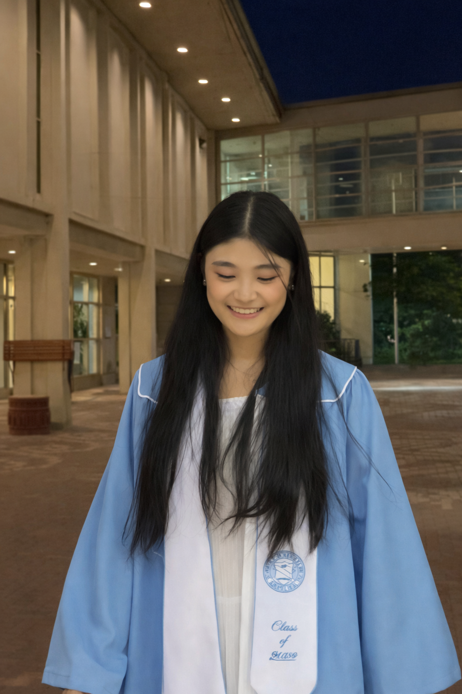

CytoWave
Orthology-aligned foundation model of single-cell genetic perturbation responses across large-scale human and mouse datasets.
Read project →AI for Science · Computational Biology · Foundation Models
I am a Ph.D. student in Computer Science and Engineering at The University of Texas at Arlington (2022-Present). I obtain my Batcher Degree in Computer Science and Biology at The University of North Carolina at Chapel Hill (2018-2022). My research focuses on perturbation foundation models, gene function prediction, graph-based biological learning, and representation learning for large-scale biomedical data. My recent work spans orthology-aligned single-cell perturbation foundation models, theory for attention-based regression, gene sequence-to-phenotype prediction, and graph-informed learning for gene function discovery.
I am currently seeking internship opportunities for 2026 and potential full-time job positions.

Orthology-aligned foundation model of single-cell genetic perturbation responses across large-scale human and mouse datasets.
Read project →Theoretical and empirical analysis of optimization conflict in attention-based regression, with extrapolative correlation attention.
Read project →Predicting gene knockout-induced phenotype abnormalities directly from gene sequences with structured multi-loss learning.
Read project →Learning gene function relationships from Gene Ontology graphs using BERT-based representation learning.
Read project →A unified database integrating Gene Ontology annotations across biological resources through the Entrez gene system.
Read project →Jingquan Yan*, Yuwei Miao*, Peiran Yu, Junzhou Huang
Yan, Jingquan*, Yuwei Miao*, Lei Yu, Yuzhi Guo, Xue Xiao, Lin Xu, Junzhou Huang
Yuwei Miao, Yuzhi Guo, Hehuan Ma, Jingquan Yan, Feng Jiang, Rui Liao, Junzhou Huang
Dang, Thao M., Haiqing Li, Yuzhi Guo, Hehuan Ma, Feng Jiang, Yuwei Miao, Qifeng Zhou, Jean Gao, Junzhou Huang